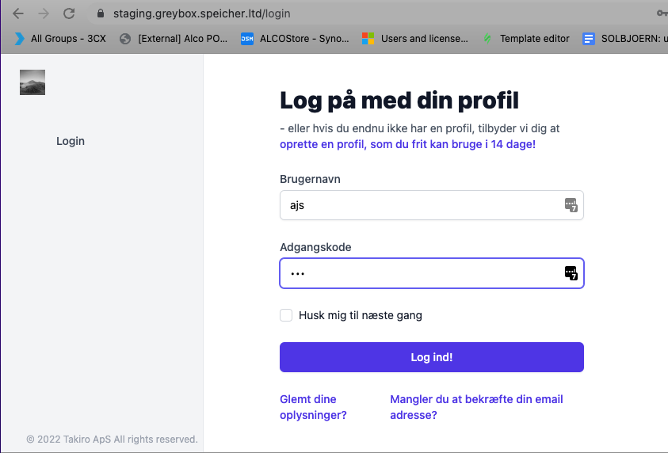

Introduction
Welcome to SPEICHER! You can use SPEICHER to solve a number of tasks, from stock management to Attendance and more.
We build SPEICHER on a battle tested foundation of Ruby, Rails, Tailwind, PostgreSQL, and a number of open source libraries. Most resources are accessible via REST API endpoints. We have language bindings in Shell, Ruby, Python, and JavaScript! You can view code examples in the dark area to the right, and you can switch the programming language of the examples with the tabs in the top right.
Allow us to briefly thank Slate. Slate is an open source tool for building documentation like this.
What to read - and when
This documentation is designed to offer support through every step of every workflow supported by SPEICHER. You could trawl through the entire thing front to back but we would rather have you use the service and dive into the documentation when needed. Usually you will be able to call up the documentation right at where you need it by using the hotkey combination: Alt-Shift-h
This is an internal link, this is
Getting Started
Configuration:
There are a few ways you can configure SPEICHER to cater for your needs.
Logo
Roles
Teams
Dashboard
Authentication
SPEICHER offers a number of ways to access data. One such way is logging in using your favorite web browser:

To authorize, use this code:
require 'speicher'
api = Speicher::APIClient.authorize!('meowmeowmeow')
import speicher
api = speicher.authorize('meowmeowmeow')
# With shell, you can just pass the correct header with each request
curl "api_endpoint_here" \
-H "Authorization: meowmeowmeow"
const speicher = require('speicher');
let api = speicher.authorize('meowmeowmeow');
Make sure to replace
meowmeowmeowwith your API key.
SPEICHER uses API keys to allow access to the API. You can register a new SPEICHER API key at our developer portal.
SPEICHER expects for the API key to be included in all API requests to the server in a header that looks like the following:
Authorization: meowmeowmeow
Replace API key
Errors
The Kittn API uses the following error codes:
| Error Code | Meaning |
|---|---|
| 400 | Bad Request -- Your request is invalid. |
| 401 | Unauthorized -- Your API key is wrong. |
| 403 | Forbidden -- The kitten requested is hidden for administrators only. |
| 404 | Not Found -- The specified kitten could not be found. |
| 405 | Method Not Allowed -- You tried to access a kitten with an invalid method. |
| 406 | Not Acceptable -- You requested a format that isn't json. |
| 410 | Gone -- The kitten requested has been removed from our servers. |
| 418 | I'm a teapot. |
| 429 | Too Many Requests -- You're requesting too many kittens! Slow down! |
| 500 | Internal Server Error -- We had a problem with our server. Try again later. |
| 503 | Service Unavailable -- We're temporarily offline for maintenance. Please try again later. |